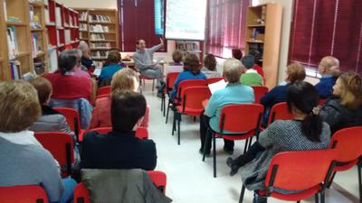

Os informamos que ya están disponibles nuevos títulos de libros electrónicos en eBiblio Castilla-La Mancha, adquiridos por la Viceconsejería de Cultura. Podéis ampliar la información de esta noticia en el Portal de Bibliotecas: http://reddebibliotecas.jccm.es/portal/index.php/actualidad/noticias/item/4829-nuevos-libros-en-ebiblio-castilla-la-mancha
XVIII Encuentro Provincial de Clubes de Lectura
El encuentro ha sido con Santiago Posteguillo en Talavera de la Reina, han asistido 500 personas. Experto en novela histórica, impartió una conferencia sobre: "Novela histórica y literatura novelada". Ha sido un placer escucharle.
Última Conferencia del Taller: El Último Holocausto Europeo
Hemos terminado el curso del Taller de literatura con la conferencia impartida por Susana Hidalgo Arenas. Es periodista, especializada en temas sociales, y responsable de comunicación de la ONG: Save the Children especializada en infancia, por lo tanto buena conocedora de los problemas de la inmigración actualmente.
Su libro titulado: El Último Holocausto Europeo, es una crónica sobre la inmigración. Como se embarcan en un viaje que muchas veces no llega a buen término, muchos se quedan en el camino, o pierden la vida en el mar. Previamente habíamos leído el libro en El Taller de Literatura, y el poder hablar con ella sobre estos temas de los que trata en su libro, nos ha servido para conocer mejor esta dura realidad que están viviendo mucha personas.
Susana muchas gracias por compartir con nosotros estas historias, que tú has visto de cerca. A nosotros nos ha servido para conocer mejor esa tremenda situación que día a día viven muchas personas. Estás haciendo una gran labor.
Cerrado por Vacaciones
La biblioteca va a estar cerrada por vacaciones desde el día 13 de junio hasta el día 30 de Junio.
Abrimos el 1 de Julio
El Último Holocausto Europeo
El libro será presentado en La Biblioteca por su autora Susana Hidalgo Arenas, periodista y experta en migraciones.
El evento tendrá lugar el 10 de Junio a las 20:00 h en La Biblioteca.
Día del Libro 2016
Este mes de abril se han llevado a cabo en la biblioteca diferentes actividades con motivo de la celebración del día del libro. Hemos recibido visitas escolares de todos los cursos de primaria, con los que se han hecho las siguientes actividades: Con el cuarto, quinto y sexto de primaria, formación de usuarios. Los niños de infantil, han disfrutado con los cuentos, especialmente con: "37 Tortugas", y con "Pollo y Erizo" de Pablo Albo. Hemos jugado a: Te Equivocas. Primero,segundo, y tercero de primaria han jugado con hombrecillos de papel blanco, a los que han decorado con frases bonitas. Previamente les he leído el cuento: "El Hombrecillo de Papel". A estas actividades han asistido en total: 226 niñ@s.
El 18 de Abril, hemos tenido cuenta cuentos con : Prmigenius, con su espectáculo: Cocinando Cuentos. Han asistido 96 niñ@s.
Con los niños de primero de la ESO, hemos leído : La Composición( Skarmeta). Seguidamente hemos hecho una actividad con el texto del libro ( Texto Roto). Han asistido 45 niñ@s.
A continuación algunas fotografías de las actividades:
Encuentro con Javier Ruescas
Hemos pasado un día estupendo en Castillo de Bayuela, en el encuentro con los autores y la ilustradora de Electro: Javier Ruescas, Manuel Carbajo y Lola Rodriguez. Hemos ido, de Los Navalmorales, 19 niñ@s de los 3 clubes de lectura que tenemos en la biblioteca: El Club de las Lectoras, el de Las Mejores Lectoras y La Patrulla Lectora. Para los niñ@s ha sido muy interesante poder hablar y preguntar a los autores del libro que se están leyendo.
A continuación algunas fotografías:
Concierto de primavera 2016
Crónica
Este año hemos celebrado el día del libro en la Biblioteca escuchando al Coro de Profesores del IES Rosa Chacel de Colmenar Viejo.
Un concierto de primavera en el que han cantado poemas.
Muchas gracias, ha sido un placer escuchar vuestras canciones.
A continuación el programa de los poemas que han cantado, algunos videos en su página de facebook y fotografías.
Anuncio
El próximo 23 de Abril (Día del Libro) a las 19:30 tendrá lugar el Concierto de Primavera a cargo del Coro de Profesores del IES Rosa Chacel de Colmenar Viejo.

Encuentro con el Escritor y Periodista Mariano Calvo
Crónica
Hemos escuchado con mucho interés a Mariano Calvo. Nos ha contado el por qué de escribir sobre la vida de Azarquiel, y nos ha hablado de la historia de Toledo, siempre muy interesante, y de este astrónomo, que vivió mucho tiempo en la ciudad.


Anuncio
El próximo 14 de Abril tendrá lugar en La Biblioteca el Encuentro con el Escritor y Peridista Mariano Calvo que nos va a hablar de uno de sus libros "Arzaquiel el Astrónomo de Toledo".

Conferencia: Bernardo Atxaga
Crónica
Esta tarde hemos comprendido un poco mejor los cuentos de Obabakoak. Lo que nos ha explicado el profesor Karlos Cid Abasolo, nos ha sido muy útil, hemos podido analizar estos cuentos desde diferentes aspectos.
Muchas gracias Karlos.

Anuncio
El próximo 8 de Abril tendrá lugar en La Biblioteca la Conferencia "Bernardo Atxaga, autor de Obabakoak: Lo antiguo y lo moderno", impartida por Karlos Cid Abasolo, Profesor titular de Lengua y Literatura Vasca en la Universidad Complutense de Madrid.

{kind=link}